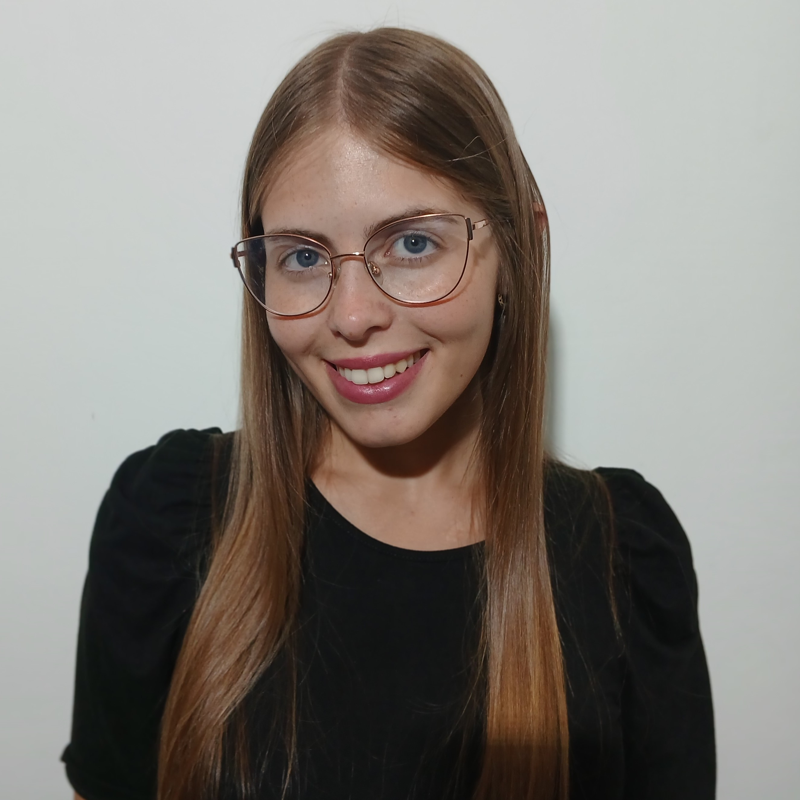

Rosario, Santa Fe, Argentina
Evelyn Giselle Muratore es Licenciada en Finanzas, egresada de la Universidad de San Andrés, con un perfil académico orientado a las finanzas cuantitativas y los mercados de capitales.
Actualmente se desempeña como Analista de Inversiones en Tarallo SA, donde gestiona operaciones bursátiles y forma parte de un equipo que monitorea un Fondo Común de Inversión de Renta Mixta y otro compuesto principalmente por productos PyMEs garantizados. En su rol, analiza carteras de inversión para distintos perfiles de riesgo, realiza informes semanales a equipos comerciales y diseña e implementa algoritmos financieros.
A su vez, es auxiliar docente en la materia Taller Trabajo de Graduación Finanzas en la Universidad de San Andrés y su responsabilidad se centra en la gestión de documentación y seguimiento de asistencia.
En el ámbito académico, ha colaborado como Ayudante de Cátedra en la materia Programación Aplicada a Finanzas en la Universidad de San Andrés y cuenta con experiencia en procesos de KYC & Reference Data en JP Morgan Chase & Co. Sus líneas de interés se centran en el Portfolio Management, el desarrollo e implementación de algoritmos financieros y la gestión de riesgos.
Avanzado: Python, Excel | Otros: Stata, SQL, Word
Español Nativo
Inglés Intermedio / Avanzado
Compromiso con la ética profesional.
Clasificación de características de los procesos estocásticos. Análisis de la capacidad para reconocer tendencia, estacionalidad y clusters de volatilidad.
Herramienta robusta bajo sistema francés para la proyección y análisis de créditos indexados.
Algoritmo de valuación de activos de renta fija con análisis de sensibilidad y duration.
Planilla de Excel que completas por mes con tus gastos y calcula estadísticas